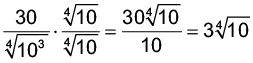
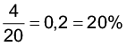
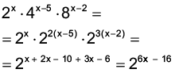

Introdução à unidade
Iniciamos o volume retomando os conceitos de conjuntos numéricos, de potenciação, estudados anteriormente, e aprofundando o estudo dos radicais. Exploramos as propriedades dos radicais, a simplificação de fatores do radicando, as operações envolvendo radicais e a racionalização de denominadores.
A seguir, relacionamos os objetivos que se pretende atingir ao estudar os conceitos desta unidade.
Capítulo 1 – Números irracionais
Objetivos:
- Diferenciar os números irracionais dos números racionais.
- Identificar os números irracionais como aqueles que podem ser escritos como números decimais infinitos e não periódicos.
- Compreender e identificar o π (pi) como um número irracional.
- Calcular a medida do comprimento de uma circunferência.
Capítulo 2 – Números reais
Objetivos:
- Reconhecer o conjunto dos números reais.
- Realizar operações envolvendo números reais.
Capítulo 3 – Potenciação
Objetivos:
- Calcular a potência de números com expoente inteiro.
- Reconhecer um número com expoente inteiro negativo como o inverso do número com expoente positivo.
- Resolver situações-problema aplicando as propriedades de potenciação.
- Utilizar a notação científica para resolver situações-problema.
Capítulo 4 – Radicais
Objetivos:
- Reconhecer que toda expressão escrita na forma, com ,
 e , é denominada raiz enésima e representa um radical.
e , é denominada raiz enésima e representa um radical. - Aplicar corretamente as propriedades dos radicais.
- Simplificar os fatores do radicando.
- Realizar operações envolvendo radicais.
- Realizar a racionalização de denominadores.
Probabilidade e estatística – Noções de probabilidade
Objetivos:
- Entender a probabilidade como a razão entre eventos favoráveis e eventos possíveis.
- Calcular a probabilidade de um evento ocorrer.
- Resolver situações-problema que envolvam o conceito de probabilidade.
Orientações específicas
Na abertura da unidade, utilizamos a notação científica para representar números muito grandes e uma potência de base 10 para representar um número muito pequeno. Essas formas de representações são utilizadas na física, biologia e química, entre outras. Após explorá-las, pode-se fazer um trabalho conjunto com a disciplina de Ciências, para que os alunos percebam outras situações em que essas representações são utilizadas. Questione os alunos sobre a importância de números muito grandes e muito pequenos serem escritos na forma de potência.
|
Principais habilidades da BNCC |
EF09MA01, EF09MA02, EF09MA03, EF09MA04 |
|
Competências |
CE2, CE8, CG2, CG9 |
Para iniciar o conceito de números irracionais, propomos aos alunos que reflitam a respeito de que a raiz quadrada de alguns números naturais não é exata e representa um número decimal e infinito. Além do número apresentado no livro, solicite aos alunos que calculem a raiz quadrada de outros números, cujas raízes não são exatas e anotem, no caderno, os valores encontrados. Dessa forma, poderão perceber que esses números são decimais infinitos e não periódicos.
“O homem persegue a precisão do número π desde a antiguidade, começando pelos egípcios, tendo no Papiro de Ahmes uma aproximação para π como (4/3)4. ou ainda 3 1/6, . Há também indícios na Bíblia (1 Reis 7:23) de que os Hebreus utilizavam 3 como aproximação de π .
No que diz respeito à obtenção do número, estima-se que em 250 A.E.C. Arquimedes obteve uma aproximação de Pi calculando o perímetro de dois hexágonos, um inscrito e outro circunscrito numa circunferência. Ao aumentar o número de lados do polígono, até chegar aos 96 lados, conseguiu uma aproximação igual a 3,142.
Seguindo a mesma técnica, Ptolomeu usou um polígono de 720 lados e obteve uma estimativa mais refinada, 3,1416 . E novamente, por volta do séc. V, os chineses, utilizaram um polígono com 3072 lados e conseguiram estimar π como 3,14159.
E daí em diante, a precisão de π foi só aumentando, principalmente com o surgimento dos computadores, passando de 3 casas decimais a 8 quadrilhões de casas decimais em 2013 pela The Santa Clara University.
Atualmente, o número de casas decimais obtidas é de
22 459 157 718 361.
Para obter o número π, matematicamente, há muitos métodos diferentes, alguns simples e outros mais complexos. Alguns métodos são: Método clássico para o cálculo de π ; Método de Arquimedes; Métodos estatísticos; Métodos de séries infinitas; Métodos de cálculo numérico; Algoritmo de Gauss-Legendre e Método de cálculo isolado das decimais.”
Fonte: Derivando a Matemática. Disponível em: http://www.ime.unicamp.br/~apmat/numero-pi/. Acesso em 28 jun. 2022.
Um número irracional bastante importante e conhecido é o número pi (π). Para iniciar o seu estudo, é proposto um experimento que pode ser realizado em duplas, permitindo que os alunos discutam os procedimentos e também interajam na hora de realizar as medições. Solicite aos alunos, com antecedência, que separem objetos cilíndricos para que possam realizar as medições.
O experimento tem por objetivo mostrar aos alunos a relação entre o número irracional pi (π), o comprimento de uma circunferência e o seu diâmetro.
Encontre soluções
Atividade 2
Nesta atividade, solicite o uso da calculadora que, além de agilizar os cálculos, permite aos alunos resolver a situação utilizando diferentes unidades de medidas.
Calcule o comprimento da circunferência maior, cujo diâmetro é dado por
D + 2H, que corresponde à distância percorrida pelo pneu em uma volta.
Sabe-se que H é igual a 75% de 300 mm, ou seja,
H = 225 mm = 0,225 m.
Como D = 22 polegadas,
D = 22 ∙ 0,025 = 0,55 m.
Portanto, o diâmetro da circunferência maior é igual a
0,55 m + 2 ∙ 0,225 m = 1 m.
C = d ∙ π ∴ C = 1 ∙ 3,14 = 3,14 m
6,28 km = 6 280 m
6 280 m : 3,14 m = 2 000
O número de voltas é igual a 2 000.
Atividade 3
Retome com os alunos que a densidade demográfica é dada pela divisão do número de habitantes pela área ocupada por esses habitantes (EF09MA07).
Atividade 4
C = πd
C = 3,14 ∙ 27
C = 84,78 mm
O comprimento da circunferência é 8,478 cm.
Atividade 5
C = πd
C = 3,14 ∙ 70
C = 219,8 m
5 000 : 219,8 ≅ 22,747
O atleta dá, aproximadamente, 23 voltas.
Atividade 6
C1 = 2πr = 2 ∙ 3,14 ∙ 2 = 12,56 km
C2 = 2πr = (2 ∙ 3,14 ∙ 4) : 2 = 12,56 km
Os dois chegarão juntos, pois a distância percorrida é a mesma.
Atividade 7
Esta atividade aborda o número de ouro ou razão áurea. Esse número irracional é considerado, por muitos, o símbolo da harmonia, por estar presente em várias obras de arte, em construções e na natureza.
O número de ouro ou razão áurea é um tema bastante rico que pode ser explorado com os alunos.
No link https://www.youtube.com/watch?v=3GH7LczhH9M há um vídeo, que conta sua história e mostra o seu uso em várias situações, com duração de 25 minutos. Embora apresente algumas situações que nesse momento talvez alguns alunos possam não compreender inteiramente, o vídeo mostra a matemática inserida na arte. Caso não seja possível assisti-lo no laboratório de informática, os alunos poderão acessá-lo em casa e, posteriormente, você poderá propor um debate sobre as questões apresentadas.
Sinopse: A série Arte e Matemática mostra as relações entre estas duas áreas nos mais variados meios e expressões - enquanto a Matemática apresenta a face mais rígida e estruturada da criação artística, a Arte representa a face mais intuitiva e lúdica do pensamento matemático. Esse programa da série aborda o conceito de proporção áurea, presente em várias formas naturais e artificiais, como obras arquitetônicas, conchas e girassóis e é comentado por professores de Matemática, Arte e Filosofia.
|
Principais habilidades da BNCC |
EF09MA02, EF09MA03, EF09MA04 |
|
Competências |
CE1, CG2, CG9 |
Neste capítulo, fazemos um fechamento dos estudos dos conjuntos numéricos abordados no Ensino Fundamental. É importante que os alunos percebam a diferença entre números racionais e irracionais e que a união destes dois conjuntos forma o conjunto dos números reais.
Neste momento, solicitamos o uso da calculadora para resolver algumas das atividades, tendo em vista que não foi estudado ainda como calcular a raiz quadrada aproximada. Esse conceito será explorado no próximo capítulo.
Encontre soluções
Atividade 2
Números naturais:

Números inteiros:
, -12
Números racionais:
; -12; 89,72; 0,4545...
Números irracionais:
; 1,23430975416231...
Números reais: todos.
Atividade 5
Nesta atividade, os alunos devem identificar a localização dos números, a partir dos pontos na reta real, conforme solicita a habilidade EF09MA02 da BNCC.
Atividade 6
Atividade 7
|
Principais habilidades da BNCC |
EF09MA03, EF09MA04, EF09MA18 |
|
Competências |
CE2, CE8, CG9 |
Neste capítulo, retomamos os conceitos estudados nos anos anteriores fazendo um aprofundamento por meio das situações que são propostas. O objetivo é relembrar os conceitos para então dar continuidade ao estudo dos radicais.
Aproveite o tema árvore genealógica e solicite aos alunos que elaborem a sua própria árvore. É possível que muitos não saibam os nomes de seus antepassados e pode ser necessário ajuda de seus familiares. Há, ainda, a possibilidade de alguns alunos não terem acesso a essas informações, nesses casos tenha sensibilidade no direcionamento da aula para não os expor aos demais.
Encontre soluções
Atividade 4
c)
d)
Proponha aos alunos que elaborem algumas situações-problema que envolvam operações com potências ou, se preferir, traga alguns problemas de concursos ou vestibulares. Organize a turma em duplas para a resolução desses problemas. Usando ou não as propriedades, explore a forma que eles chegam às respostas, se encontram as respostas facilmente ou se demoram. Caminhe pela sala para ver se os alunos estão conseguindo progredir nos cálculos e use o Guia de Intervenções, para orientar os alunos com boas perguntas para que possam progredir na atividade.
Mostre que, em alguns casos, é possível resolver um mesmo problema de diferentes formas. Podendo haver uma forma mais rápida que a outra, mas nem sempre isso é fácil de ser percebido. Deixe que eles exponham a forma que consideram mais fácil de resolver.
Sugestão de atividade
- (ENEM) Técnicos concluem mapeamento do Aquífero Guarani
Comparando as capacidades do Aquífero Guarani e desse novo reservatório da Sabesp, a capacidade do Aquífero Guarani é
- 1,5 x 102 vezes a capacidade do reservatório novo.
- 1,5 x 103 vezes a capacidade do reservatório novo.
- 1,5 x 106 vezes a capacidade do reservatório novo.
- 1,5 x 108 vezes a capacidade do reservatório novo.
- 1,5 x 109 vezes a capacidade do reservatório novo.
Aquífero Guarani: Volume: 30 000 km3
Convertendo km3 para m3: 30 000 ∙ 1 000 m ∙ 1 000 m ∙ 1 000 m =
= 30 000 ∙ 109 m3
Notação científica: 30 000 ∙ 109 = 3 ∙ 104 ∙ 109 = 3 ∙ 1013 m3
Reservatório da Sabesp: Volume: 20 000 000 L
Convertendo para m3: 20 000 000 L = = 20 000 m3
Notação científica: 20 000 m3 = 2 ∙ 104 m3
Razão entre os dois valores:
Então, o Aquífero Guarani é 1,5 ∙ 109 vezes maior que o reservatório da Sabesp.
Encontre soluções
Atividade 3
Nas atividades desta seção, retomamos os conceitos estudados em notação científica, já vistos em anos anteriores. Em cada uma das atividades promova um momento de discussão, para entender quais as estratégias usadas pelos alunos na resolução das situações propostas.
Neste momento, também é possível que as atividades sejam resolvidas em duplas para potencializar as discussões. Esse tipo de estratégia amplia o repertório dos alunos e possibilita novos conhecimentos quanto às estratégias e conclusões.
|
Principais habilidades da BNCC |
EF09MA03, EF09MA04, EF09MA20 |
|
Competências |
CE6, CE8, CG2, CG9 |
O estudo dos radicais permitirá aos alunos conhecer e realizar as operações envolvendo vários tipos de radicais. Eles também poderão entender como representar uma potência com expoente racional na forma de radical. Lembrando que todas as propriedades estudadas para expoentes inteiros também são válidas para os expoentes racionais.
Mostre aos alunos como utilizar a calculadora científica para extrair uma raiz que não seja quadrada. Além do exemplo apresentado no livro, solicite que eles calculem a raiz de outros radicais, como raiz quarta, quinta, etc., de outros números.
Radiciação
Situação 1
A área do quadrado é dada por , ou seja: para determinar a área de um quadrado, eleva-se ao quadrado a medida do seu lado.
No caso do pasto da fazenda, temos o valor total da área e queremos saber a medida de seus lados. Então:
Cada lado da região destinada ao pasto mede 50 m.
Situação 2
Nesta situação temos o volume do cubo e queremos saber a medida de suas arestas. Então:
Cada aresta desse bloco mede 2 m.
Encontre soluções
Atividade 2
A = 108,16 m²
ℓ = 10,4 m
Perímetro: 4 ∙ 10,4 = 41,6 m
Atividade 3
V = 1,331 cm³
Propriedades dos radicais
Nesse momento procura-se desenvolver nos alunos o raciocínio lógico, o espírito de investigação e a capacidade de produzir argumentos convincentes, recorrendo aos conhecimentos matemáticos para compreender e atuar no mundo. A compreensão das propriedades dos radicais auxilia também na interpretação de situações reais e em situações imaginadas para que possam chegar a conclusões expressando suas respostas por meio de diferentes formas de registros e linguagens (gráficos, tabelas, esquemas, além de texto escrito na língua materna e outras linguagens para descrever algoritmos, como fluxogramas e dados).

Encontre soluções
Atividade 1
f)
k)
l)
Atividade 2

Relembre com os alunos a propriedade distributiva da multiplicação e os produtos notáveis. Comente que, em alguns casos, é possível resolver um mesmo problema de diferentes formas. Podendo haver uma forma mais rápida que a outra, mas nem sempre isso é fácil de ser percebido. Observe as dificuldades que surgem e faça anotações para a retomada do conteúdo, caso seja necessário.
Encontre soluções
Atividade 2
Atividade 5

Atividade 6
Racionalização de denominadores
Comente que a racionalização de denominadores é um procedimento ou uma técnica utilizada quando uma fração tem um número irracional no denominador cujo objetivo é transformar uma fração com denominador irracional em uma fração equivalente com denominador racional. Utilizamos essa técnica, pois o resultado da divisão por um número irracional apresenta um valor com muito pouca precisão.
Encontre soluções
Atividade 1


Atividade 2
Atividade 3
Atividade 4

- 
Atividade 5
Atividade 6
Atividade 2
Atividade 3
- Probabilidade = 
- Probabilidade =
- Probabilidade =
- Probabilidade =
Atividade 4
Como o sorteio será realizado entre as pessoas que opinaram e 21% do total dos visitantes não opinaram, temos que o sorteio será realizado entre 395 pessoas.
12% responderam “chato” que corresponde a 60 pessoas.
Probabilidade =
Atividade 5
Probabilidade =
Aproveite a tabela e estimule os alunos a descreverem no caderno, por meio de um texto, as informações que eles identificaram na tabela. Relembre também a importância da vacina como uma maneira de prevenção.
Atividade 6
Probabilidade =
Relembre
Esta seção finaliza a unidade. Você poderá verificar, através de atividades, se os conceitos estudados na unidade foram assimilados.
Os alunos podem ser organizados em duplas para trocarem ideias, hipóteses, conhecimentos e possíveis dúvidas nas atividades. Depois, permita que compartilhem suas ideias e expliquem como pensaram durante o processo de resolução de cada atividade.
Você pode selecionar as atividades e também propor outras em sala de aula ou como lição para casa, de acordo o desenvolvimento da turma. Porém, sempre que possível, faça as correções coletivamente em sala de aula para que os alunos compartilhem estratégias e sejam levantadas possíveis dificuldades.
Atividade 2
2 184 : 42 = 52
Como o primeiro será instalado somente no quilômetro 42, a quantidade de telefones será 52 - 1 = 51.
Atividade 4
a = 1,6; b = ;
c = .
Portanto b < a < c.
Atividade 5
Para n = 1 → 4n - 1 = 4 - 1 = 3
Para n = 2 → 4n - 1 = 8 - 1 = 7
Para n = 3 → 4n - 1 = 12 - 1 = 11
Para n = 4 → 4n - 1 = 16 - 1 = 15
Para n = 5 → 4n - 1 = 20 - 1 = 19
4n - 1 representa a sequência 3, 7, 11, 15, 19 ...
Atividade 6
Atividade 7
C = πd
C = 3,14 ∙ 10
C = 31,4 cm
10 m = 1 000 cm
1 000 : 31,4 = 31,8
O menor número de voltas
completas é 32.
Atividade 8
C = 2πr
C = 2 ∙ 3,14 ∙ 100
C = 628 m
3,2 km = 3 200 m
3 200 : 628 = 5,09
Após percorrer 3,2 km ele
estará na volta 6.
Atividade 10
Atividade 11
Atividade 12
Atividade 13
Atividade 14
Atividade 15
Atividade 16
Atividade 17
Atividade 18
Atividade 19
Atividade 20
Atividade 21
 Atividade 22
Atividade 22
Probabilidade =
Atividade 23
Múltiplos de 13: 13, 26, 39, 52, 65, 78, 91, 104, 117, 130, 143, 156, 169, 182, 195, 208, 221, 234
Probabilidade =
Atividade 24

Atividade 25
Atividade 26
Atividade 27
Divisores de 60: 1, 2, 3, 4, 5, 6, 10, 12, 15, 20, 30, 60
Números primos: 2, 3, 5
Probabilidade =